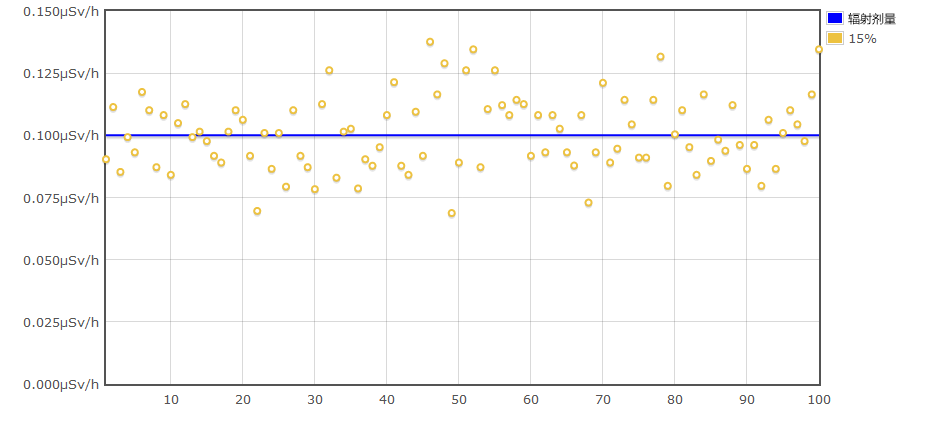

如果测量仪器附着有放射性物质，则此后会显示高辐射剂量，无法做出正确判断。
特别是使用云母窗的盖革计数器一旦脏了就很难清洗。
（微小的外力都会导致触摸云母窗破裂。）
特别是不要将测量仪器直接放在地面、土壤或草地上
如果将测量设备放在塑料袋或自封袋中，则不必担心弄脏测量设备
如果是只能测量 γ 射线的机型，可以直接测量。
如果仪器也能测量β和α射线，在测量空气剂量率（µSv/h）时，需切换到γ射线。
除部分机型外，当测量中包含β射线时，可能会显示比实际空气剂量大数十倍的数值。
如果使用不具备切换功能的检测β射线的机种，在距地面1m处进行测量，可以大大降低β射线的影响，使数值更接近正确的数值。
要知道，测量仪器给出的数值可能有几倍甚至更多的误差，而且由于故障或其他原因，它们有时会产生不正确的数值。
由于盖革计数器的工作方式，不可能测量准确的空气剂量率（µSv/h）。
只有标明为能量补偿的型号才能测量出准确的数值。
不同的测量仪器会得出不同的结果，因此应注意以下几点
此外，测量仪器可能会因无线电波的噪音等而发生故障，或者当附近有接受过使用放射性物质的医疗检查或治疗的人时，可能会显示高剂量。
如果显示高剂量值，请保持冷静并检查其原因。
尝试移动到另一个位置，检查附近是否有其他辐射测量仪器、手机、电器设备（空气净化器、火车电机等）。
如果附近有人员，请远离他们。
进行测量时，还需要注意方向。
测量仪器所显示的数值取决于测量辐射的方向。
尤其是 GM 管，显示的数值可能会因方向不同而相差数倍，因此需要测量时使测量目标位于测量仪器的正面方向（校准时源的放置方向）进行测量。
如果放射性物质附着在测量仪器上，显示值会因附着的放射性物质而增加。
如果闪烁体式测量仪器是防水的，如果弄脏了可以用水擦拭来清洗。
就盖革计数器而言，具有防水性能的很少，所以从一开始就必须注意。
如果沙子和灰尘进入测量仪的内部，许多型号的测量仪就很难清洗。
此外，带云母窗的型号需要特别小心处理。 它们一碰就碎，而且一旦粘上就很难取下。
由于这些是昂贵的测量仪器，建议在密封袋或类似的容器中进行测量。
许多型号的仪器在β + γ射线或α + β + γ射线测量模式下测量空气剂量率（µSv/h）时显示异常的高值。
有些仪器能识别模式的切换并纠正显示，而有些仪器则需要切换到只用γ射线。
根据不同的测量仪器，如果不使用选件，可能无法只测量γ射线。
如果仪器对β射线敏感但没有切换功能，或者没有β射线屏蔽的选项，在离地面1米高的地方测量可以减少β射线的影响。
这是因为大多数β射线在空气中的传播距离只有1米左右，并且会被衰减。
参考：β射线射程计算工具
更多关于为什么与β射线一起测量会出现异常值的信息，请参考文章：用盖革计数器测量β射线时的错误指示
主要型号的情况如下。
| 型号名称 | 备注 |
|---|---|
| Inspector系列 Digilert 100 Radalert 100 |
不能只测量伽马射线，也不能测量正确的空气剂量率。 需要安装选配的补偿配件。 |
| RadEye B20/B20ER | 必须安装附带的 γ 过滤器。 |
| RADEX RD1503 RADEX RD1706 |
它旨在检测少量的 β 射线。 虽然不是异常高的值，但作为空气剂量率是高的，所以在确认Sv/h时，最好在距地面1m处测量。 |
| GAMMA-SCOUT COLIY 900/910 |
必须切换到伽马射线模式测量。 |
| ECOTEST TERRA | 必须仅使用伽马射线进行测量。 在安装后盖的情况下进行测量。 |
| Polimaster PM1208M Polimaster PM1610 |
可以直接读数，因为它搭载的是只接受伽马射线的 GM 管。 |
| RadEye PRD ALOKA TCS-172B Polimaster PM1703M |
可以直接读数，因为这些机型搭载的是闪烁体传感器 |
有能量补偿的机型通常是正确的。
即便如此，误差也可能是几十个百分点，所以最大和最小值可能相差约 1.5 倍。
对于没有能量补偿的机型，其数值可能与实际的空气剂量率有很大的偏差。
关于能量补偿的含义以及为什么没有能量补偿时数值会出现偏差的详细解释，请参考能量补偿功能一节。
在没有能量补偿的情况下，只有在测量特定的放射性物质时，数值才会被调整（校准）为正确。
大多数型号是用铯-137校准的，但有些是用钴-60校准的。
测量非用于校准的放射性物质使仪器更容易或更难探测到辐射。
如果检测的难易程度发生了变化，数值就会出现该量的偏差，并与正确数值相差甚远。
因此，简单地将一个人的测量结果与另一个人的测量结果相比较，可能会导致错误的判断。
即使比较相同的测量仪器，如果测量方法（如离地多少厘米）不同，结果也会不同，所以除非测量条件适当匹配，否则比较可能不正确。
比较安全的做法是在类似的条件下进行自己的测量，并与自己的测量结果进行比较。
除了能量补偿的问题外，由于测量随机发射的辐射的性质，显示的剂量率也会有变化。一些测量仪器将这种变化显示为%的统计误差。
即使是不显示误差的型号，如果你知道测量仪器的灵敏度（cpm/μSv/h的值），你可以在下面的页面上模拟出变化的程度。
参考：辐射测量仪器（盖革计数器）的误差模拟。
如果剂量是恒定的，计算辐射显示值的时间越长，误差值就越小。 (计数辐射以计算显示值的时间越长，误差值就越小（多次测量时的变化越小）。
许多Polimaster型号显示的剂量率是基于剂量率恒定时在较长时间内的测量结果。
例如，Polimaster PM1610的手册指出，应在误差为15%或更小的情况下读取数值。
15%或更少的误差意味着用一个典型的盖革计数器，0.1 µSv/h需要5到20分钟来测量。
除Polimaster外，许多型号都根据一定时间内的测量结果显示剂量率。
HORIBA PA-1000 Radi和Mr Gamma A2700的灵敏度相对较高，在大约15秒内的误差小于15%，但由于仪器显示的是过去一分钟的平均值，在0.1 µSv/h时，显示值的误差约为7%。
根据不同的型号，测量时间可以通过设置来调整，或者根据当时的剂量率自动改变。
根据型号的不同，有可以通过设置调整测量时间的，也有根据当时的剂量率自动变化的。
例如，当读取误差为15%的数值时，经过100次测量后，其数值会有如下图所示的变化。
如果你发现这张图的变化太大，你可以通过以下方式来改善它
上面的模拟可以在这里进行。
参考：模拟辐射测量装置（盖革计数器）的测量值在恒定误差下的抖动模拟。
模拟结果还显示了达到每个误差需要多少分钟，所以你可以在购买测量仪器时以此为参考。
由无线电波和其他来源的噪声引起的故障发生在许多测量仪器中。
耐噪性因型号不同而有很大差异，但对于半导体和闪烁型仪器来说，通常特别弱。
来自手机、空气净化器、火车电机等的无线电波也会引起故障，在这种情况下可能会显示非常高的数值。
(手机输出的无线电波强度随无线电波条件的变化而变化，所以即使它们平时不发生故障，在某些时候也可能发生故障)。
有些辐射测量仪器内部也会有高压电，这可能会导致其他辐射测量仪器出现故障。
参考：防止入店行窃的防盗传感器与A2700. Gamma（闪烁体）故障
参考：长号声音导致 TC100S（闪烁体）故障
当使用放射性材料进行检查或治疗时，放射性材料可能会在病人体内停留一段时间，导致10μSv/h或更高的剂量率。
这不是故障，而是实际的高剂量，所以如果你想尽可能地避免暴露在辐射中，你需要远离接受检查/治疗的人。
如果您与患者密切接触，等等，你可能会测到超过100μSv/h。在这种情况下，剂量率实际上很高，而不是故障。
在这种情况下，接受检查/治疗的人很可能不知道他/她正在接受使用放射性材料的治疗（即他/她正在发出一定量的辐射），所以请注意不要惹上麻烦。